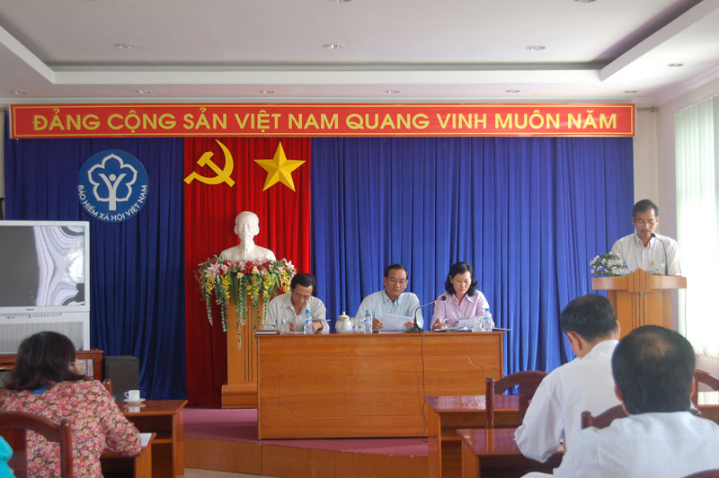

Quý IV/2012 là quý mang tính quyết định để phấn đấu hoàn thành chỉ tiêu của Ngành phát triển tốt đối tượng, tăng tỷ lệ thu, giảm nợ đọng. Được sự quan tâm của Ban lãnh đạo, ngày 19/10/2012, dưới sự chủ trì của đồng chí Vũ Hoàng Cương - Giám đốc Bảo hiểm xã hội tỉnh An Giang, Hội nghị giao ban quý III và triển khai phương hướng nhiệm vụ quý IV/2012 đã diễn ra tại hội trường Bảo hiểm xã hội tỉnh.
Tham dự Hội nghị còn có các Phó Giám đốc, Trưởng - Phó phòng nghiệp vụ Bảo hiểm xã hội tỉnh và Lãnh đạo Bảo hiểm xã hội các huyện, thị, thành phố.
Theo báo cáo đánh giá kết quả thực hiện quý III và phương hướng, nhiệm vụ quý IV/ 2012, Trưởng các phòng nghiệp vụ đã báo cáo 04 chuyên đề để nhận thấy rõ hơn tình hình hoạt động, những kết quả đạt được, khó khăn vướng mắc còn tồn đọng và đề ra những kiến nghị. Trên cơ sở đó, đại biểu đã thảo luận đóng góp ý kiến, cùng đánh giá và đưa những giải pháp tích cực khắc phục để hoàn thành tốt chỉ tiêu đề ra.
Phát biểu kết luận Hội nghị, Đồng chí Vũ Hoàng Cương đánh giá cao kết quả đạt được, mặc dù gặp không ít khó khăn, thách thức, song với tinh thần đoàn kết của toàn thể cán bộ, công chức, viên chức Bảo hiểm xã hội tỉnh An Giang quyết tâm, nỗ lực phấn đấu hoàn thành nhiệm vụ chính trị. Trong quí IV/2012, cần phải đẩy mạnh tiến độ thu, phát triển đối tượng, kiểm soát tình hình nợ đọng, quản lý tốt công tác tài chính, tiếp tục nâng cao chất lượng hiệu quả công tác cán bộ, kiện toàn bộ máy quản lý.
Đồng chí yêu cầu trong thời gian tới tiếp tục tăng cường công tác tham mưu cho cấp Ủy, Uỷ ban nhân dân để lãnh đạo, chỉ đạo thực hiện tốt chính sách Bảo hiểm xã hội, Bảo hiểm y tế trên địa bàn và cần có sự phối hợp tốt hơn nữa với các sở, ban, ngành, các cấp khắc phục tình trạng nợ đọng từ nguồn ngân sách nhà nước; tăng cường tuyên truyền vận động, đặc biệt quan tâm phát triển đối tượng học sinh, sinh viên tham gia bảo hiểm y tế năm học 2012 - 2013; xây dựng kiện toàn Đại lý thu; đa dạng hóa công tác tuyên truyền nhằm nâng cao nhận thức cộng đồng về chính sách bảo hiểm y tế để đạt mục tiêu phát triển y tế toàn dân.
Ghi nhận kết quả đạt được trong thời gian qua, tại hội nghị Giám đốc Bảo hiểm xã hội tỉnh trao tặng giấy khen cho các đơn vị hoàn thành tốt chỉ tiêu thu Bảo hiểm xã hội, Bảo hiểm thất nghiệp, Bảo hiểm y tế. Đây là món quà ý nghĩa động viên tinh thần để các đơn vị cùng nhau phấn đấu hoàn thành chỉ tiêu của Ngành năm 2012.
Trường Nhi